Mediodía
Almuerzo
Menú del día preparado por la chef
- Empanadas de carne o de verdura
- Picada de campo
- Milanesas con ensalada
- Queso y dulce
- Una gaseosa línea cola y un Malbec joven cada dos personas

Día de campo
De 10 a 19 hs · De la Canal, Tandil
Reservar por WhatsAppJornada de 10 a 19 hs · Sin alojamiento
Un día entero para venir a la estancia, sentarse a la mesa sin mirar el reloj y dejar que el campo haga lo suyo. Llegás a media mañana, almorzás lo que preparó la chef, salís a caminar entre el parque y el viñedo, y la tarde se cierra con una merienda casera en la galería.
Es la forma más simple de conocer San Eusebio: sin valijas, con tiempo, y con la historia de la casa contada por quien la vive.
Qué incluye
Mediodía
Menú del día preparado por la chef
Media tarde
Todo casero, en la galería
Todo el día
Para estar, caminar y escuchar
Contamos con menú vegetariano y sin TACC. Avisanos al reservar.
La casa y su gente
“Cada rincón de San Eusebio tiene una historia, y nos gusta contarla en persona.”
Durante la tarde, la propietaria te acompaña a recorrer la estancia y cuenta cómo llegó a ser lo que es hoy: la casa, los olivos, el viñedo y los caballos que andan sueltos entre los árboles.
Temporada baja
$ 140.000
por persona · de 10 a 19 hs
Almuerzo, merienda, bebidas, paseo por la estancia y el viñedo, y el relato de su historia.
Consultar fechaAdicional
Se organizan en la estancia según disponibilidad. Tienen un costo aparte: consultanos al reservar.
Antes de venir
La jornada va de 10 a 19 hs. No incluye alojamiento; si querés quedarte a dormir, consultanos por las habitaciones.
Sí. Avisanos al momento de reservar y la chef prepara el menú para vos.
Ropa cómoda y calzado para caminar por el campo. Un abrigo para la tarde, que en De la Canal refresca.
La galería está cerrada, así que el almuerzo y la merienda se hacen igual.
Escribinos por WhatsApp con la mayor anticipación posible si necesitás cambiar o cancelar la fecha.
Cuando quieras
Elegí el día y cuántos son. Te confirmamos por WhatsApp.